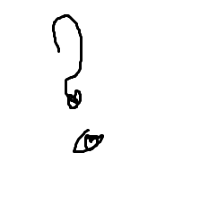

Ilmateenuste küsimustik
Sisesta oma nimi:
Vali sugu:
mees
naine
valimata

Jälgin ilmateated
1 kord päevas
1 kord nädalas
ei huvita
kui tuleb torm
Milline veebileht sa kasutad ilmateavet vaadata?
...vali...
www.ilm.ee
www.yr.no
www.gismeteo.com